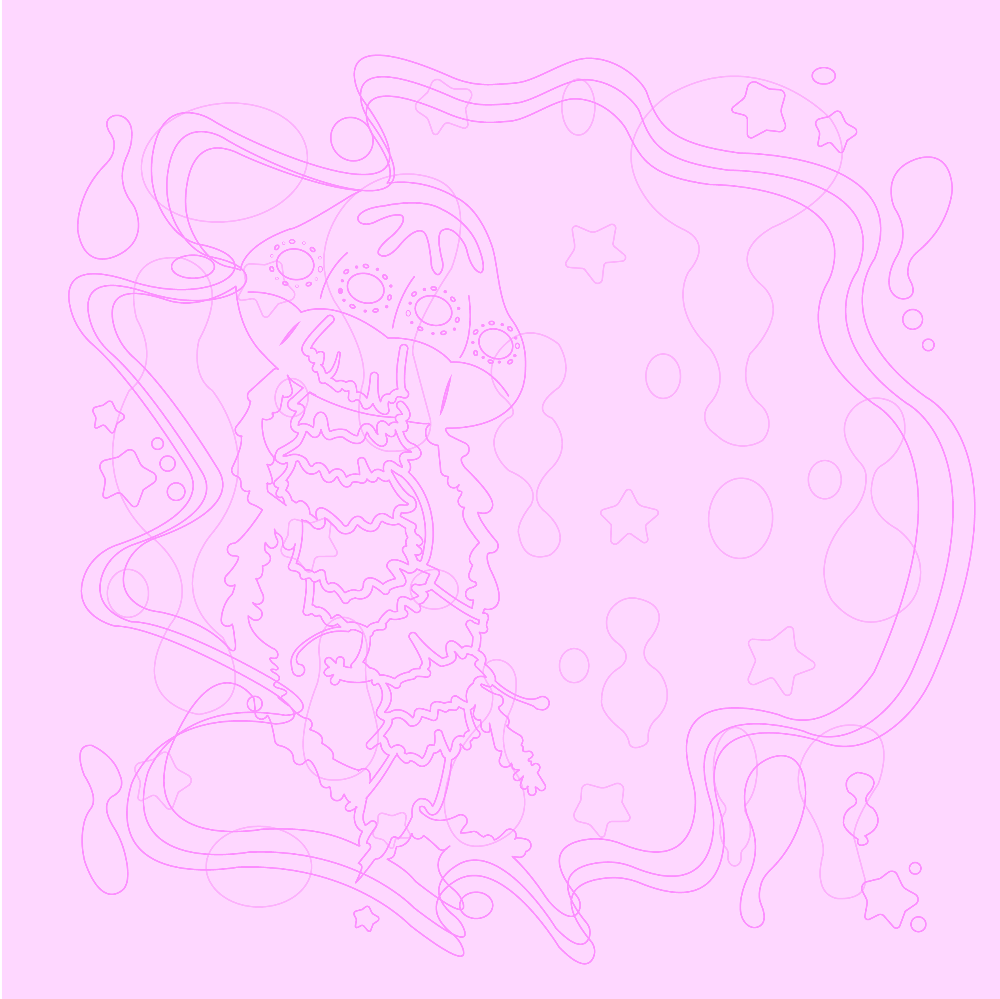
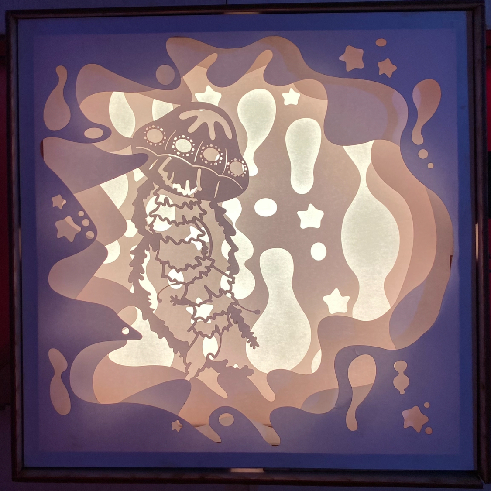

Tofu Makeover

I used Illustrator to give Nosoya's tofu brand a makeover.
Tofu Makeover is a vector illustration piece that completely
rebrands nasoya's Organic Tofu, America's number one selling
tofu brand. It presents itself with a different combination
of new fonts, less writing on the front, a new little tofu
character on the front and back of the package that I named
Toefee, and a tasty stir fry tofu recipe on the back. You do
not usually see a cute tofu character on tofu packaging which
is why I designed Toefee. I also thought about the fact that
there are a lot of people who do not know how to cook tofu,
which is why I included a stir fry tofu recipe in the back. I
like stir fried tofu.
Dear Diary Tracklist

The purpose is to share the names of the songs in Alex Sloan's Dear
Diary album to her audience. I used Photoshop to put this together
and took inspiration from the album's concept, that being feminine
with a dark twist. I blended different assets together to get the
final product I wanted and since the album is called Dear Diary, I
made the font look like handwriting.
Light Box


This was a collaborative project where we came up with a design for a
light box. We considered the fact that it was going to change colors
and thought about a jellyfish. We wanted it to have an almost lava-lamp
feel to it and create a sense of depth with the borders. I made the
layers on Illustrator and then we laser cut it and assembled the pieces
together. We ended up slightly changing the original design when we were
gluing to make it seem like there was more movement happening.